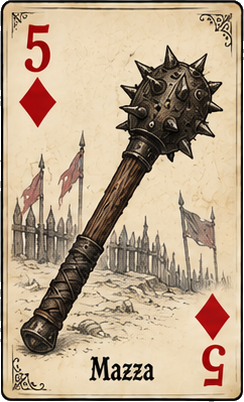
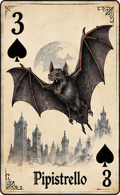
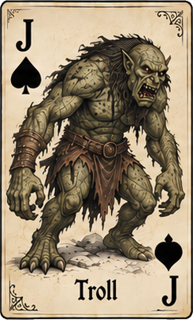
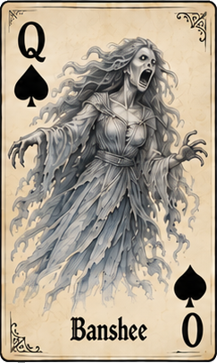
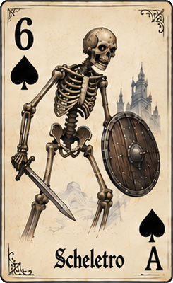
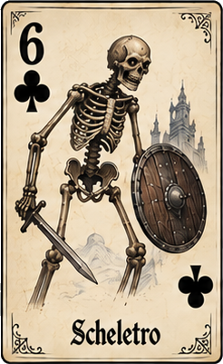
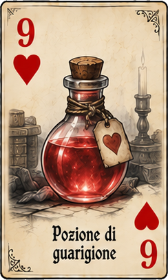
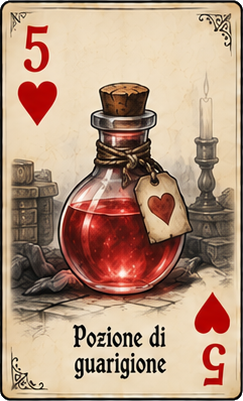

Scoundrel
Regole
1. Preparazione
Scoundrel usa un normale mazzo di carte francesi. Si rimuovono i due Joker, tutte le figure rosse (Fanti, Donne e Re di Cuori e Quadri) e i due Assi rossi. Restano 44 carte: 13 di Fiori, 13 di Picche, 9 di Quadri e 9 di Cuori.
Mescola le 44 carte e disponile coperte: questo è il Dungeon. La Salute iniziale è 20.
2. Tipi di carta
- Fiori e Picche — Mostri: il valore della carta indica quanti danni il mostro infligge quando viene combattuto. Quando si combatte un mostro, il mostro viene sconfitto e scartato, ma prima infligge al giocatore un numero di danni pari al suo valore, salvo che un’arma ne riduca l’entità. Le carte numerate valgono il numero indicato; Fante = 11, Donna = 12, Re = 13, Asso = 14.
- Quadri — Armi: un’arma riduce i danni inflitti da un mostro. Il suo valore viene sottratto al valore del mostro: la differenza è il numero di danni che il giocatore subisce.
- Cuori — Pozioni: ripristinano Salute in misura pari al loro valore, senza poter superare 20 punti. Durante ogni turno si possono bere tutte le pozioni che si desidera, ma soltanto la prima ha effetto; le successive vengono scartate senza effetto.
3. La Stanza
All’inizio del primo turno, e di ogni turno successivo, si pescano carte dal Dungeon finché sul tavolo ci sono quattro carte a faccia in su. Queste quattro carte costituiscono la Stanza.
Quando la Stanza è formata, prima di risolvere qualsiasi carta si decide se affrontarla oppure evitarla.
Affrontare la Stanza
Se si affronta la Stanza, si scelgono e si risolvono tre delle quattro carte, una alla volta e nell’ordine desiderato. La quarta carta rimane scoperta sul tavolo e diventa parte della Stanza del turno successivo. Al turno successivo si aggiungono tre nuove carte, fino ad avere nuovamente quattro carte.
È possibile scegliere liberamente l’ordine in cui risolvere le tre carte. Questa scelta è spesso fondamentale per sfruttare al meglio armi e pozioni.
Evitare la Stanza
Prima di risolvere qualsiasi carta della Stanza, si può scegliere di evitarla. In questo caso si raccolgono tutte e quattro le carte e si mettono in fondo al Dungeon, senza risolverle.
È possibile evitare tutte le Stanze che si desidera, ma non è possibile evitare due Stanze consecutive. Dopo aver evitato una Stanza, la Stanza successiva deve quindi essere affrontata.
4. Impugnare un’arma
Quando si risolve una carta Quadri, l’arma deve essere impugnata. Non è possibile conservarla senza impugnarla.
L’arma viene messa scoperta nell’area dell’arma impugnata. Se si possiede già un’arma, la nuova arma la sostituisce: l’arma precedente e tutti i mostri che erano stati sconfitti con essa vengono scartati.
Una nuova arma può essere usata contro qualsiasi mostro. Dopo che l’arma è stata usata per sconfiggere un mostro, però, la sua efficacia è soggetta a una limitazione: può essere usata soltanto contro mostri di valore strettamente inferiore a quello dell’ultimo mostro sconfitto con quell’arma.
Il limite dell’arma stabilisce quali mostri possono essere affrontati con essa. Quando si usa l’arma, il suo valore riduce sempre i danni inflitti dal mostro. Per esempio, un’arma di valore 5 usata contro un mostro di valore 8 fa subire 3 danni. Se l’arma non può essere usata contro un determinato mostro, non viene scartata: si può combattere quel mostro a mani nude e conservare l’arma per un mostro successivo di valore inferiore.
5. Combattere i Mostri
A mani nude
Si può sempre scegliere di combattere un mostro a mani nude. Il mostro viene sconfitto e scartato, ma infligge al giocatore un numero di danni pari al proprio valore. Questi danni vengono sottratti dalla Salute.
Con un’arma
Se l’arma impugnata può essere usata contro quel mostro, si può combattere con l’arma. Il mostro viene comunque sconfitto e scartato, ma l’arma riduce i danni che il mostro infligge: si sottrae il valore dell’arma al valore del mostro. La differenza è il danno subito dal giocatore. Se il risultato è negativo, il danno è zero.
Il mostro sconfitto viene poi messo sopra l’arma. I mostri sconfitti con un’arma restano associati a quell’arma finché non viene sostituita.
6. Usare le Pozioni
Quando si risolve una carta Cuori, si può bere la pozione. La Salute aumenta di un numero pari al valore della carta, senza poter superare 20.
Durante ogni turno si possono bere tutte le pozioni che si desidera, ma soltanto la prima pozione bevuta ha effetto. Tutte le pozioni successive possono essere comunque risolte e vengono semplicemente scartate senza ripristinare Salute.
Questo significa che una seconda pozione nello stesso turno non deve essere ignorata o conservata: può essere scelta e risolta normalmente, ma non produce alcun effetto sulla Salute.
7. Esempi

→
Un’arma di valore 5 viene usata contro un mostro di valore 3. Il mostro viene sconfitto, ma il suo danno viene completamente annullato dall’arma.
3 danni − 5 di arma = 0 danni subiti
Il mostro viene sconfitto e viene messo sopra l’arma. Il valore dell’arma continua a essere 5.

Un’arma di valore 5 viene usata contro un Fante, che vale 11. Il Fante viene sconfitto, ma infliggerebbe 11 danni senza protezione. L’arma ne riduce 5.
11 danni − 5 di arma = 6 danni subiti
Si perdono 6 punti Salute. Il Fante viene poi messo sopra l’arma.

→
Un’arma di valore 5 sconfigge prima una Donna, che vale 12. Dopo questa vittoria può essere usata contro mostri di valore strettamente inferiore a 12. Un 6, quindi, può essere affrontato con l’arma.
12 → 6 ✓
Se la stessa arma ha appena sconfitto un 6, non può essere usata contro una Donna (12). La Donna deve essere affrontata a mani nude.
6 → 12 ✕
L’arma non viene scartata: resta impugnata e può essere usata contro un mostro di valore inferiore a 6.

Dopo aver sconfitto un 6 con l’arma, non è possibile usare la stessa arma contro un altro 6. Il valore del nuovo mostro deve essere strettamente inferiore a 6.
6 → 6 ✕

→
Con 14 punti Salute si può bere prima il 9 di Cuori e salire a 20. Se nello stesso turno si beve anche il 5 di Cuori, la seconda pozione viene comunque risolta e scartata, ma non produce alcun effetto.
14 → 20 → 20
8. Fine della partita e punteggio
La partita termina quando la Salute raggiunge 0 oppure quando viene attraversato l’intero Dungeon.
Se la Salute raggiunge 0, si considerano tutti i mostri ancora presenti nel Dungeon e si somma il loro valore. Il punteggio è questa somma con segno negativo.
Se si attraversa l’intero Dungeon, il punteggio è pari alla Salute finale. Se la Salute è ancora 20 e l’ultima carta risolta è una pozione, al punteggio si aggiunge anche il valore di quella pozione.